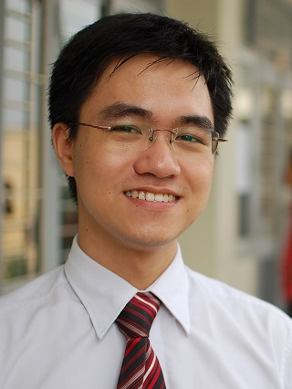

Duc Hoang Bui's home page

I am Bui Hoang Duc, a PhD student in Computer Science at
Korea Advanced Institute of Science and Technology (KAIST).
I am working with Professor Insik Shin and excellent people at
Cyber Physical Lab.
News
[Sep 2015] My MobiCom paper was covered on Can smartphones use less energy to browse the web?.
[Sep 2015] I finished a 4-month internship at Frontier CS Lab in Software R&D Center at Samsung Electronics headquarter, Suwon, South Korea.
[Jul 2015] Video demo for MobiCom 2015 is available on YouTube.
[Jun 2015] My paper "Rethinking Energy-Performance Trade-Off in Mobile Web Page Loading" has been accepted to MobiCom 2015 conference.
[Mar 2015] I won a Qualcomm Innovation Award at KAIST.
[Sep 2014] I received an award of Excellence for my participation in the Microsoft Research Asia Internship Program.
[Jun 2014] I finished a 6-month internship at Microsoft Research Asia.
[Mar 2014] I was awarded an Outstanding Master's Thesis award for Year 2013 by Computer Science Department.
[Mar 2014] Galaxy S5 Download Booster feature uses techniques in our GreenBag paper which was sponsored by Samsung.
My resume is here.
Research
My current research is about energy saving and QoS of applications on mobile devices.
I previously worked on software testing using dynamic symbolic execution (concolic testing).
Publications
-
Rethinking Energy-Performance Trade-Off in Mobile Web Page Loading.
Duc Hoang Bui, Yunxin Liu, Hyosu Kim, Insik Shin, Feng Zhao.
ACM International Conference on Mobile Computing and Networking (MobiCom) 2015.
- GreenBag: Energy-efficient Bandwidth Aggregation
for Real-time Streaming in Heterogeneous Mobile Wireless Networks.
Duc Hoang Bui, Kilho Lee, Sangeun Oh, Hyojeong Shin, Insik Shin, Honguk Woo, and Daehyun Ban.
IEEE Real-Time Systems Symposium (RTSS) 2013.
-
A Case Study of the Application of Dynamic Symbolic Execution to Real-World Binary Programs.
Duc Bui Hoang, Yunho Kim, and Moonzoo Kim.
Proceedings of Korea Conference on Software Engineering (KCSE) 2012.
-
A method of verifying web service composition.
Thang Huynh Quyet, Quynh Pham Thi, and Duc Bui Hoang.
Proceedings of ACM International Symposium on Information and Communication
Technology (SoICT) 2010.
Academic Activities
- Attendance at MobiSys, an international conference on mobile systems, Taipei, 2013.
- Presentation at ROSAEC-HKUST CSE Joint Workshop on Program Analysis for Error-free Computing.
A Case Study of the Application of Dynamic Symbolic Execution to Real-World Binary Programs.
Hong Kong University of Science and Technology, 2012.
Theses
Contact information
Cyber-Physical Systems Laboratory
Computer Science Department
Korea Advanced Institute of Science and Technology (KAIST)
(34141) Room 4427, School of Computing (E3-1), 291 Daehak-ro, Yuseong-gu, Daejeon, Republic of Korea
Email: ducbuihoang [at] kaist {dot} ac {dot} kr or
ducbuihoang [at] gmail {dot} com
{kind=link}